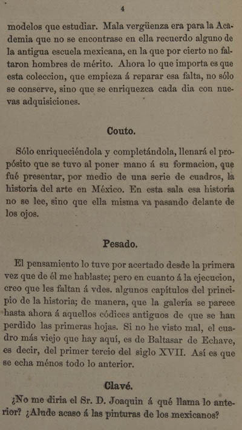

|  |
modelos que estudiar. Mala vergüenza era para la Academia que no se encontrase en ella recuerdo alguno de la antigua escuela mexicana, en la que por cierto no faltaron hombres de mérito. Ahora lo que importa es que esta coleccion, que empieza á reparar esa falta, no sólo se conserve, sino que se enriquezca cada dia con nuevas adquisiciones. Couto Sólo enriqueciéndola y completándola, llenará el propósito que se tuvo al poner mano á su formacion, que fué presentar, por medio de una serie de cuadros, la historia del arte en México. En esta sala esa historia no se lee, sino que ella misma va pasando delante de los ojos. Pesado El pensamiento lo tuve por acertado desde la primera vez que de él me hablaste; pero en cuanto á la ejecucion, creo que les faltan á vdes. algunos capítulos del principio de la historia; de manera, que la galería se parece hasta ahora á aquellos códices antiguos de que se han perdido las primeras hojas. Si no he visto mal, el cuadro más viejo que hay aquí, es de Baltasar de Echave, es decir, del primer tercio del siglo XVII. Así es que se echa ménos todo lo anterior. Clavé ¿No me diria el Sr. D. Joaquin á qué llama lo anterior? ¿Alude acaso á las pinturas de los mexicanos?
|
| 1 | 2 | 3 | 4 | 5 | 6 | 7 | ... | 105 | Siguiente |
|||
| Arriba |
||||||||||||